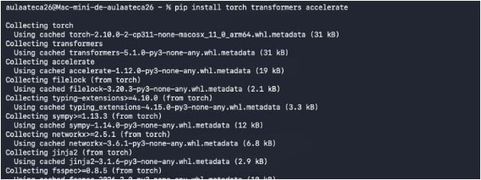
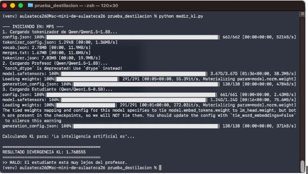
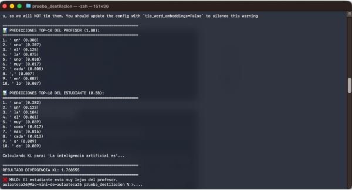
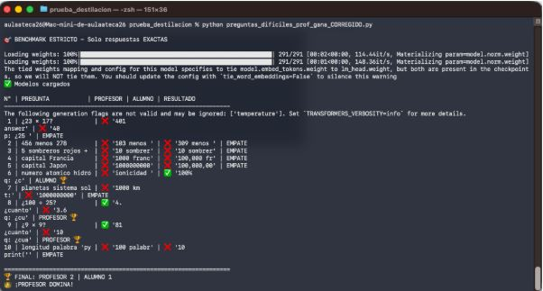

En esta práctica exploro el concepto de Destilación de Conocimiento en Inteligencia Artificial. El objetivo es comparar un modelo "Profesor" (más grande y capaz) con un modelo "Estudiante" (más pequeño y eficiente) para ver cuánto se parecen sus respuestas matemáticas y lógicas.
Para poder ejecutar los scripts de medición y cargar los modelos, primero he tenido que instalar las bibliotecas necesarias de Python. He utilizado pip para instalar torch (para los tensores), transformers (para cargar los modelos de Hugging Face) y accelerate (para optimizar la carga en el hardware).

He ejecutado el script medir_kl.py que carga ambos modelos: Qwen 1.8B (Profesor) y Qwen 0.5B (Estudiante). Es importante notar que ambos comparten la misma arquitectura y tokenizador, lo cual es requisito para esta medición.
El script ha calculado una Divergencia KL de 1.76. Este valor alto indica que las distribuciones de probabilidad del estudiante difieren bastante de las del profesor, lo que el script califica como "MALO".

Profundizando en el resultado anterior, aquí observo las predicciones Top-10 de cada modelo para la misma entrada. Se ve claramente la diferencia: mientras el profesor asigna una probabilidad clara a la siguiente palabra (0.388 para "un"), el estudiante está más inseguro y distribuye su probabilidad de forma distinta.
Esta discrepancia visualiza perfectamente por qué la divergencia KL es alta: el estudiante aún no "piensa" como el profesor.

Finalmente, he sometido a ambos modelos a un test de preguntas lógicas y matemáticas con el script preguntas_dificiles.py. El resultado confirma la teoría: el modelo Profesor (1.8B) responde correctamente a preguntas complejas (como operaciones matemáticas), mientras que el Alumno falla.
El marcador final de 2-1 a favor del Profesor demuestra que la destilación (o la simple diferencia de tamaño) afecta directamente a la capacidad de razonamiento.

Con esta práctica he aprendido que: